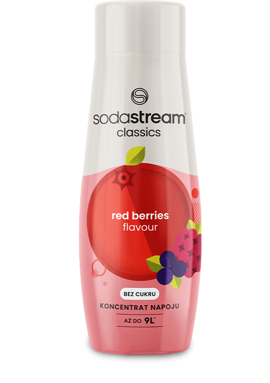

Syrop

SODASTREAM
SYROP OWOCE LEŚNE
440 ML
Leśna uczta w Twoim domu!
Odkryj na nowo smak dojrzałych leśnych owoców z syropem SodaStream! Wystarczy saturator SodaStream, zimna woda z kranu i syrop, aby w mgnieniu oka stworzyć pyszne, orzeźwiające bąbelki. Zapomnij o dźwiganiu ciężkich butelek - z SodaStream leśne owoce są zawsze w zasięgu ręki!
Jedna SODASTREAM -
Wiele możliwości
Zamień zwykłą wodę w leśną eksplozję smaku z SodaStream Owoce Leśne!
Stwórz idealnie gazowany napój o wyjątkowym smaku leśnych owoców. Dostosuj poziom bąbelków do swoich preferencji - lekki, średni, a może mocny gaz? Poczuj smak leśnej przygody bez wychodzenia z domu, delektując się cudownym połączeniem orzeźwienia i leśnej słodyczy.

zabąbelkuj, dodaj syrop i gotowe!
gazuj
miksuj
smakuj
Stwórz swój autorski napój o smaku Owoców Leśnych! Dodaj cytrusy, kruszony lód, a nawet świeże zioła. Zaskocz swoich gości leśnymi koktajlami i poczuj się jak w zaczarowanym lesie.
Nieograniczone MOŻLIWOŚCI
Wypróbuj inne syropy SodaStream! Kwiat Czarnego Bzu, Pepsi Lime Zero Cukru i Pepsi Mango Zero Cukru. A może klasyczne Pepsi, Mirinda i orzeźwiającą Lemoniadę? Odkryj bogactwo smaków i poczuj moc bąbelków z saturatorem SodaStream!
inspiracja na wyciągnięcie ręki
Sprawdź nasz przepis na orzeźwiający napój z leśnymi owocami i daj się ponieść fali leśnych doznań!